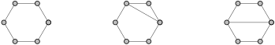

Section 3.1 Centrality Measures
Here are the network and centrality definitions that we will need.
Let \(G=(V,E)\) be a network (graph) on \(N\) vertices.
Let \(k_i = \deg(i)\) be the degree of vertex \(i\)
Let \(d_{i,j} = d(i,j)\) be the distance between vertices \(i\) and \(j\)
Let \(n_{s,t}\) be the number of geodesics (shortest paths) from \(s\) to \(t\)
Let \(n_{s,t}(i)\) be the number of \((s,t)\)-geodesics that go through vertex \(i\)
Exercises Practice Problems
1. Understanding Centrality Measures.
For each centrality measure, give an intuitive explanation of what is "central" about vertices with large values.
Degree Centrality
Betweenness Centrality
Closeness Centrality
2. Centrality Calculation Examples.
For each of the following graphs, calculate the (unnormalized) degree centrality, betweenness centrality and closeness centrality
Degree Centrality \(c_i^D = \deg(i) = k_i\)

Betweenness Centrality \(c_i^B = \displaystyle{\sum_{s \neq i} \sum_{t \neq i, s} \frac{n_{s,t}(i)}{n_{s,t}}}\)

Closeness Centrality \(c_i^C = \displaystyle{\frac{1}{\sum_{j} d_{i,j}}}\)
3. Contrasting Centralities.
In the following table, we consider interesting vertices that score highly in one centrality, but not in another. Describe or draw a network topology and vertex positions that could satisfy each combination below.
| Low Degree | Low Closeness | Low Betweenness | |
| High Degree | N/A | ||
| High Closeness | N/A | ||
| High Betweenness | N/A |
4. Digraph Centrality Measures.
During class, we adapted degree centrality for digraphs, which leads to in-degree centrality and out-degree centrality. Given an intuitive explanation for what it means to have (i) high in-degree centrality and (ii) high out-degree centrality.
Adapt betweenness centrality and closeness centrality for digraphs. Do you need two different measures for each (one for in and one for out)? Give an intuitive explanation for what it means to when these centrality measures are large in a digraph.
5. Shortcuts in a Cycle.
What is the effect of adding one shortcut to a cycle on six vertices? Calculate the centralities as specified below.
Degree Centrality \(c_i^D = \deg(i) = k_i\)

Betweenness Centrality \(c_i^B = \displaystyle{\sum_{s \neq i} \sum_{t \neq i, s} \frac{n_{s,t}(i)}{n_{s,t}}}\)

Closeness Centrality \(c_i^C = \displaystyle{\frac{1}{\sum_{j} d_{i,j}}}\)
